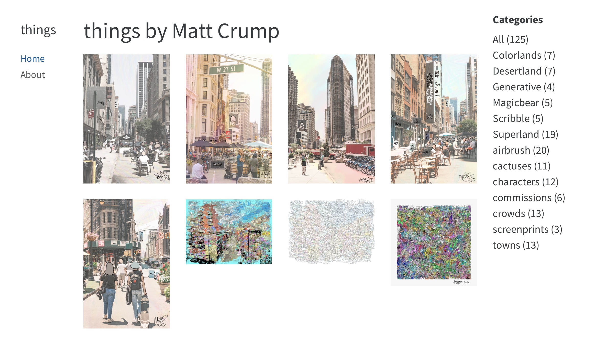

A simple visual art portfolio website using Quarto

I recently updated my visual art website. It’s now a very simple portfolio/gallery built using Quarto. This post is a quick run-down of what I did, with notes to my future self. The source code is on github: https://github.com/CrumpLab/things.
What I wanted
I started with a few things I wanted to achieve:
Really simple, clean website design that makes it easy to look at the pictures
Flat structure, minimal clicking
easy to update with new stuff
Some way to tag individual pictures (e.g., different collections of series)
Add more info to describe process behind a particular work
Alt text (still haven’t added this yet, but it’s possible).
Quarto website structure
├── README.md
├── Things.Rproj
├── _quarto.yml
├── about.qmd
├── docs
├── images
│ ├── Colorlands
│ ├── Desertland
│ ├── ...
├── imgs
├── index.qmd
├── make_qmds.R
├── styles.css
└── things
├── Colorlands
├── Desertland
├── ...The landing page shows a grid of pictures. This behavior is controlled by index.qmd, which uses the listing option in the top-level YAML.
---
title: "things by Matt Crump"
listing:
contents: things
type: grid
image-height: "100%"
grid-columns: 4
page-size: 20
grid-item-border: false
fields: [image]
sort-ui: [date,categories]
categories: true
sort:
- "date desc"
format:
html:
page-layout: full
---It’s possible to customize several aspects of the grid, including the number of columns, and the number of images to display before pagination. The contents: parameter points to the name of a folder things containing .qmd for each image. All .qmd files in the folder are automatically rendered and the image associated with the document is shown in the listing grid. Clicking on a picture in the front page grid links to the individual page for each picture.
A quarto page for each picture
The things folder contains multiple sub-folders, each with .qmd files for individual works I want listed in the gallery. The sub-folder names the collection or series.
└── things
├── Colorlands
│ ├── Colorland_3.qmd
│ ├── Golden_Pyramid_With_Tunnel_Celebration.qmd
│ ├── Meeting_Of_The_Mountains.qmdAn example .qmd file for an individual piece is below. I’m using the categories feature to code which series the piece is in, and these keywords are displayed on the website to filter all of the pictures really quickly.
---
title: Colorland 3
author: Matt Crump
image: ../../images/Colorlands/Colorland_3.jpeg
description: Digital Work
categories: [Colorlands]
date: 2022-06-10
format:
html:
page-layout: full
---
Most of the pages have no content except for the picture, but if I ever want to add more, it’s possible to write anything underneath (with all of the options that are available for HTML quarto documents).
Automating qmd generation
One of the tedious aspects of this approach is that each image requires its own qmd file. That could be a lot of files. Instead of writing them by hand, I scripted this part. Each of the images already had some EXIF metadata that specificied the title and a few other details (like basic description and creation date). I wrote an R script make_qmds.R that read in each image, extracted the EXIF data, and then wrote a .qmd file to display the image.
Adding new stuff
To add new stuff I’ll have to pop in an image file in the images folder, and then write a corresponding .qmd file in the things folder. It’s not that time consuming for a single image. I have the feeling that I should improve the scripts and turn them into functions. Maybe later.